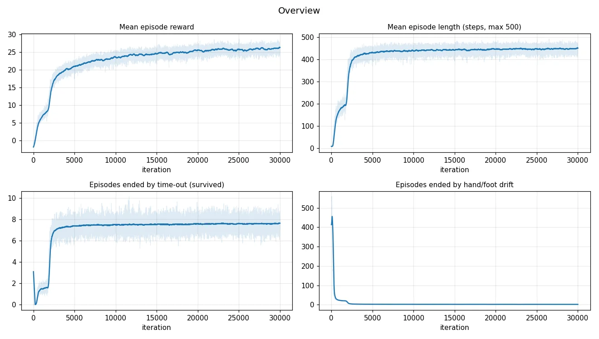

Demos
Fixed combo: kick → dodge → punch
The solid robot is the physics simulation driven by the policy. The faint ghost is the reference motion it is tracking.
Choosing moves live in the viewer
Moves requested from the Moves panel jump the queue. Punch → punch and punch → dodge were never trained, and the robot still stays up.
How it works
Human motion capture (BVH) is retargeted to T800 joint trajectories, then PPO trains one tracking policy on 4,096 robots in parallel in mjlab (MuJoCo Warp). Each step the policy sees the robot's state and the target frame of the reference motion. It never sees a move's name, so any move can follow any other; which clip comes next is decided by the command term in simulation and by the deploy code on the robot.
What I built
1. MultiMotionCommand
- Loads several named reference clips (kick, dodge, punch) and feeds them to one policy in sequence
- During training, 70% of robots practice single moves and 30% practice chained sequences
2. Closest-entry transitions
- When one clip ends, the next starts from the frame that best matches the robot's current pose instead of frame 0
- Found and fixed a bug where the punch was skipped (see below)
3. Live move picker
- A request queue in the command plus a Moves panel in the viser viewer: one button per move, Clear queue, and an Autoplay toggle
- Covered by unit tests
4. BVH-to-training data path
- Fixed the Holosoma retargeting setup (BVH unit scale, initial-pose selection, dependencies)
- Converted retargeted qpos into 50 fps mjlab tracking files for kick, dodge, and warmup motions
5. Auto-resuming cluster training
- Slurm job that checkpoints every 250 iterations and resumes by itself after crashes, node failures, or cancellation
- Runbooks for SDSC and a Colab smoke test, plus a learning-curve plotter
Results
First full run: 30,000 PPO iterations in 17 h 54 min on one RTX 2080 Ti, with no crashes. Kick, dodge, and punch are all tracked, and the chained kick → dodge → punch works in playback.
| Metric | Start | End |
|---|---|---|
| Mean episode reward (smoothed) | −1.9 | 26.3 |
| Episode length (steps survived, max 500) | 9 | ~450 |
| Body position error | 2.08 m | 0.057 m |

The skipped punch
The first playback showed kick and dodge but no punch. The punch clip starts and ends in the same guard stance, so the closest-entry search matched its last frame (93 of 94) and the punch ran for one or two control steps before the sequence moved on. I limited the search to the first half of the next clip, which leaves the other hand-offs unchanged, and added a regression test. The bug was also live during training, so the dodge → punch hand-off was never practiced in chained sequences; it still looks fine in playback because the two poses are close.
Status and limits
- Only one order (kick → dodge → punch) was trained. Other orders work in playback but were never practiced.
- There is no idle or guard-stance clip yet, so the robot falls within a few seconds if asked to hold still between moves.
- The largest remaining tracking error is torso drift across the floor (~0.2 m).
- Next: an idle clip, training with a random next move, and the same move queue in the robot-side deploy loop feeding the ONNX policy.
Credit
Original Kimodo BVH-to-T800 retargeting support was written by a teammate. Retargeting builds on Holosoma, the training stack is mjlab with rsl_rl's PPO, and the T800 model and reference tracking code come from EngineAI.
Technology Stack
- Python
- PyTorch
- mjlab
- MuJoCo Warp
- PPO
- Holosoma
- BVH
- Slurm
- viser